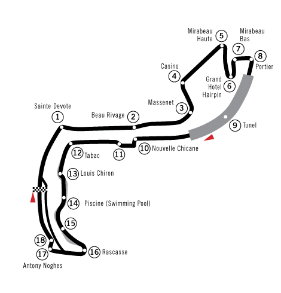

Circuit de Monaco

The Monaco Grand Prix is considered one of the most prestigious automobile races in the world. The circuit has been hosting Formula One races since 1929.
Circuit Details
Info
Features
DRS
- Length: 3.337 km
- Turns: 19
- Lap Record: 1:12.909 - Lewis Hamilton (2021)
- Casino Square: Famous for its tight turn and glamorous surroundings, this iconic section challenges drivers with its precise turning requirements.
- Tunnel: The fastest part of the circuit, where cars reach speeds of up to 290km/h before emerging into daylight and braking for the chicane.
- Nouvelle Chicane: A key overtaking spot after the tunnel, requiring heavy braking from high speed and precise car placement.
- Swimming Pool Complex: A series of quick turns next to Monaco's swimming pool, requiring maximum precision and commitment.
- Rascasse: A tight hairpin that leads into the final corner, crucial for a good lap time and often a scene of race drama.
- Zone 1: After Turn 19 to Turn 1 (510 meters)